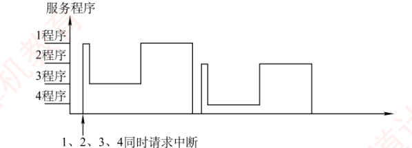
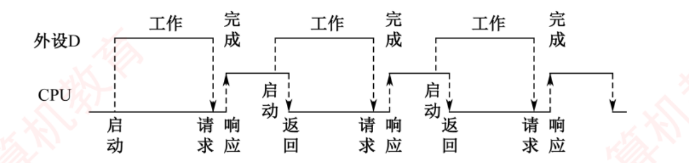

第7章 习题精选
本页共 33 题：选择题 24 道（第 1～2 题出自 7.1 I/O 系统基本概念，第 3～8 题出自 7.2 I/O 接口，第 9～24 题出自 7.3 I/O 方式），综合题 9 道（第 25～31 题对应做题本综合第 2、5～7、9～11 题，第 32～33 题为补收的做题本综合第 1、8 题；做题本综合题共 11 道，仅第 3、4 题因素材缺页未收录）。收录 2009/2010/2011/2012/2014/2016/2017/2018/2019/2020/2021/2022/2025 年统考真题共 15 道（其中综合题 5 道）。题干【 】内为做题本出处；选择题答案均已与《选择题【答案速查】》网格逐题核对。
一、选择题（第1～24题）
第1题【7.1·P293】在微型机系统中，I/O 设备通过（ ）与主板的系统总线相连接。
答案与解析
答案：B
I/O 设备不能直接挂在系统总线上，必须通过设备控制器（即 I/O 接口/适配卡的典型形态）与总线相连，由它完成信号格式转换、数据缓冲、状态检测与设备控制。A、C 中的 DMA 控制器、中断控制器是为 CPU 分担传送控制或中断管理的部件，不是所有设备接入总线的通用通路；D 的 I/O 端口只是接口内部可被 CPU 访问的寄存器，不是“连接部件”本身。
第2题【7.1·P293·2010 统考真题】假定一台计算机的显示存储器用 DRAM 芯片实现，若要求显示分辨率为 1600×1200，颜色深度为 24 位，帧频为 85Hz，显存总带宽的 50% 用来刷新屏幕，则需要的显存总带宽至少约为（ ）
答案与解析
答案：D
① 刷新一屏所需数据量 = \(1600 \times 1200 \times 24\,\text{bit} = 4.608\times10^{7}\,\text{bit} = 46.08\,\text{Mb}\)；
② 每秒刷新 85 帧，刷新占用带宽 = \(46.08\,\text{Mb} \times 85 = 3916.8\,\text{Mb/s}\)；
③ 刷新只占总带宽的 50%，故显存总带宽 ≥ \(3916.8 \div 50\% = 7833.6\,\text{Mb/s} \approx 7834\,\text{Mb/s}\)，选 D。
第3题【7.2·P297】在统一编址的方式下，区分存储单元和 I/O 设备是靠（ ）
答案与解析
答案：A
统一编址把 I/O 端口与主存单元放进同一个地址空间，两者地位等同：给端口和主存划分互不相同的地址码段，CPU 访问某个地址时，落在主存段就是访存、落在端口段就是访问 I/O 设备，故选 A。地址线、数据线、控制线对两类访问完全公用，B、C、D 均错。（对比：独立编址是两个独立地址空间 + 专门的 I/O 指令，靠指令操作码区分。）
第4题【7.2·P297】下列关于 I/O 端口和接口的说法中，正确的是（ ）
答案与解析
答案：D
独立编址为 I/O 端口另设一个与主存无关的地址空间，端口地址可能与主存地址重号，只能靠指令类型（操作码）区分访问对象，因此必须设置专门的 IN/OUT 指令，D 正确。A 错，统一编址下端口被当作普通存储单元对待，使用与主存同一套寻址与保护机制；B、C 均错——区分靠的是地址码/指令，地址线本身是公用的，两种编址方式都不存在“另一套地址线”。
第5题【7.2·P298·2012 统考真题】下列选项中，在 I/O 总线的数据线上传输的信息包括（ ）
I. I/O 接口中的命令字 II. I/O 接口中的状态字 III. 中断类型号
答案与解析
答案：D
I/O 总线的数据线负责传送除地址外的一切数据类信息：CPU 向接口命令寄存器写入的命令字（I）、CPU 从状态寄存器读出的状态字（II）都经数据线往返；中断响应周期中，中断控制器还经数据线把中断类型号（III）送交 CPU。三类全走数据线，选 D。（地址码走地址线，握手与时序控制走控制线，不要混。）
第6题【7.2·P298·2014 统考真题】下列有关 I/O 接口的叙述中，错误的是（ ）
答案与解析
答案：D
统一编址的本质恰恰就是用访存指令（如 MOV、LOAD/STORE）访问 I/O 端口——端口本来就是地址空间的一部分，D 说反了，选 D。A 正确：读操作取状态、写操作送控制命令，一个寄存器按读/写方向两用即可；B 正确，这正是 I/O 端口的定义；C 正确：独立编址的两个地址空间互不相关，编号可以重叠，同一个地址值既可能是主存地址又可能是端口地址。
第7题【7.2·P298·2017 统考真题】I/O 指令实现的数据传送通常发生在（ ）
答案与解析
答案：D
如 IN AX, PORT / OUT PORT, AX：I/O 指令在 CPU 的通用寄存器与接口中的I/O 端口（数据缓冲寄存器）之间交换数据，选 D。外设与端口之间的传送由设备侧硬件完成，CPU 指令“看不见”外设本身，A、B 错；端口对端口之间没有这种传送形态，C 错。
第8题【7.2·P298·2021 统考真题】下列选项中，不属于 I/O 接口的是（ ）
答案与解析
答案：A
I/O 接口（I/O 控制器）的功能是接收主机发来的 I/O 控制信号，并实现主机与外部设备之间的信息交换——打印机适配器、网络控制器（网卡）、可编程中断控制器都属于此类：前两者分别代主机管理打印机和网络通信，可编程中断控制器则汇集各中断源的请求、判优并向 CPU 转交中断类型号，它们都是插在主机与外设之间、供 CPU 访问的接口/控制器（B、C、D）。而磁盘驱动器由磁头、盘片和磁盘读/写电路等组成，就是平常所说的磁盘本身，它是被接口驱动的外部设备本体，而不是接口，故选 A。
第9题【7.3·P317】设置中断排队判优逻辑的目的是（ ）
答案与解析
答案：B
多个中断源同时请求时必须按优先级排队，判优逻辑从中选出当前优先级最高者先行响应，避免竞争冲突，B 正确。A 是中断源编码（向量编码）环节的事；C 是由中断向量/向量地址机制解决的；D 错，判优逻辑只是保证“高者优先”，并不能让响应这个动作本身变快。
第10题【7.3·P317】以下关于中断的说法中，错误的是（ ）
答案与解析
答案：C
C 混淆了两个概念：向量地址是中断向量表中表项的地址，其中存放的内容才是中断服务程序的入口地址——向量地址是“入口地址的地址”，选 C。A 正确，服务程序通常由操作系统提供并管理；B 正确，向量法由类型号直接查表得到入口，比软件逐一查询识别快得多；D 正确，CPU 正在处理某中断时又转去响应处理新的中断，重叠处理即中断嵌套。
第11题【7.3·P318】中断响应是在（ ）
答案与解析
答案：C
CPU 在每条指令执行周期之末统一采样各中断源的中断请求信号（外中断）。若允许在指令执行中间响应，当前指令会半途而废，断点（下条指令地址）无法正确保存、现场自相矛盾。因此外中断响应固定安排在指令执行之末（且需开中断、无 DMA 等更紧急请求）。
第12题【7.3·P318】某计算机有 4 级中断，优先级从高到低为 1→2→3→4。若将优先级顺序修改，改后 1 级中断的屏蔽字为 1101，2 级中断的屏蔽字为 0100，3 级中断的屏蔽字为 1111，4 级中断的屏蔽字为 0101，则修改后的优先顺序从高到低为（ ）
答案与解析
答案：B
屏蔽字各位从左到右依次对应 1、2、3、4 级，某位为 1 表示屏蔽该级请求，为 0 表示开放（允许它打断本级的执行）：
| 中断源 | 屏蔽字（对应1、2、3、4级） | 屏蔽的级别 | 开放（可打断它）的级别 |
|---|---|---|---|
| 1 级 | 1101 | 1、2、4 | 3 |
| 2 级 | 0100 | 2 | 1、3、4 |
| 3 级 | 1111 | 1、2、3、4 | 无（谁也打不断它） |
| 4 级 | 0101 | 2、4 | 1、3 |
由“开放的级别 > 本级”逐条推导：① 3 级屏蔽所有源 → 3 最高；② 1 级只对 3 开放 → 3 > 1；③ 4 级对 1、3 开放 → 1 > 4、3 > 4；④ 2 级对所有人都开放 → 2 最低。合并得 3→1→4→2，选 B。
快捷验算：屏蔽字中“1”越多，处理优先级越高。各级“1”的个数：3 级 4 个、1 级 3 个、4 级 2 个、2 级 1 个，按个数降序即 3→1→4→2，与逐条推导一致。

第13题【7.3·P318】在中断响应周期中，CPU 主要完成的工作是（ ）
答案与解析
答案：A
中断响应周期由硬件（中断隐指令）完成三件事：① 关中断——防止保存断点的过程又被新请求打断；② 保护断点——把 PC 压栈或存入指定单元；③ 发中断响应信号并形成向量地址——为转入服务程序铺路。C、D 中的“执行中断服务程序”属于随后的中断处理阶段（由程序完成），不在响应周期内；响应阶段应是关中断而非开中断（开中断通常在服务程序末尾），B、D 错。
第14题【7.3·P319】设置中断屏蔽标志可以改变（ ）
答案与解析
答案：D
响应优先级由硬件排队电路固定决定，屏蔽字改不动它，所以 A、B 都错；多个服务程序开始执行的顺序由响应次序决定（同时请求时谁优先谁先进入），C 也改不了。屏蔽字的作用是：把某些级别的请求“挡在门外”，使处理优先级高的服务程序先执行完——它改变的只是各服务程序执行完（结束）的先后次序，即处理次序，选 D。可与第 12 题对照体会。
第15题【7.3·P319】在各种 I/O 方式中，中断方式的特点是（ ），DMA 方式的特点是（ ）
答案与解析
答案：B（中断方式）、D（DMA 方式）
中断方式：外设准备数据的同时 CPU 继续执行主程序，二者并行；但数据的传送要等中断响应后由 CPU 执行中断服务程序完成，这段时间传送与主程序串行（CPU 被打断），选 B。DMA 方式：数据传送由 DMA 控制器申请总线后硬件直送（如周期挪用），CPU 只做预处理和后处理，传送可与主程序并行，选 D。
第16题【7.3·P319】下列关于程序查询方式及其工作过程的叙述中，正确的是（ ）
答案与解析
答案：C
程序查询的一轮循环是：读状态端口 → 未就绪则继续踏步查询 → 就绪后经数据端口传送一个字 → 修改主存地址指针与传送计数器 → 计数未完继续下一轮，C 正确。A 错，查询方式全部由软件（查询程序）实现，“软件查询/硬件查询”是中断判优的分类；B 错，数据传送同样由 CPU 执行 I/O 指令亲自完成；D 错，方向说反了——查询期间 CPU 被“拴死”在踏步循环上，不能去执行其他程序，这正是查询方式 CPU 利用率最低的根源。
第17题【7.3·P319】在 DMA 传送方式中，由（ ）发出 DMA 请求，在传送期间总线控制权由（ ）掌握。
答案与解析
答案：C
两级请求要分清：外设准备好一个数据后，先向 DMA 控制器发出“DMA 请求”（由接口内请求触发器记录）；DMA 控制器再持此请求向 CPU 申请总线使用权。获准后，总线控制权移交给 DMA 控制器，由它直接指挥主存与接口之间的数据传送，传完把总线还给 CPU。故两空依次为“外部设备、DMA 控制器”，选 C。
第18题【7.3·P319】以下关于 DMA 方式进行 I/O 的描述中，正确的是（ ）
答案与解析
答案：A
完整的 DMA 过程分三段：预处理——CPU 执行初始化程序向 DMA 控制器写入主存起始地址、传送方向、传送字数；数据传送——DMA 控制器申请到总线后由硬件直接控制传送，CPU 不参与；后处理——传送结束时 DMA 控制器向 CPU 发中断请求，CPU 执行服务程序善后（校验、登记等）。可见“部分由 CPU 控制、部分由 DMA 控制器控制”，A 正确，B、C、D 的“完全由……”均片面。
第19题【7.3·P320】采用周期挪用进行 DMA 数据传送时，每传送一个数据要占用一个（ ）的时间。
答案与解析
答案：D
周期挪用（周期窃取）挪的是主存的存取周期：DMA 控制器每要传一个数据，就从 CPU 手里“借”一个存取周期完成一次主存读写，随即把周期还给 CPU。指令周期、机器周期、时钟周期都是 CPU 内部的时间单位，与主存一次读写并不一一对应，选 D。
第20题【7.3·P320·2011 统考真题】某计算机处理器主频为 50MHz，采用定时查询方式控制设备 A 的 I/O，查询程序运行一次所用的时钟周期数至少为 500。在设备 A 工作期间，为保证数据不丢失，每秒需对其查询至少 200 次，则 CPU 用于设备 A 的 I/O 的时间占整个 CPU 时间的百分比至少是（ ）
答案与解析
答案：C
① 每秒至少查询 200 次，每次至少 500 个时钟周期，故每秒用于查询的周期数至少为 \(200 \times 500 = 1.0\times10^{5}\) 个；
② 主频 50MHz，每秒共有 \(50\times10^{6} = 5\times10^{7}\) 个时钟周期；
③ 占比 = \( \dfrac{1.0\times10^{5}}{5\times10^{7}} = 0.002 = 0.20\% \)，选 C。
第21题【7.3·P321·2014 统考真题】若某设备中断请求的响应和处理时间为 100ns，每 400ns 发出一次中断请求，中断响应所允许的最长延迟时间为 50ns，则在该设备持续工作过程中，CPU 用于该设备的 I/O 时间占整个 CPU 时间的百分比至少是（ ）
答案与解析
答案：B
关键陷阱在 50ns：它是请求发出后等待被响应的最长延迟，属于设备的等待时间，不算 CPU 用于 I/O 的时间。CPU 的实际开销只有每次“响应 + 处理”的 100ns。设备每 400ns 请求一次且持续工作，故每 400ns 内 CPU 花在它身上的时间为 100ns：
占比 = \( \dfrac{100\,\text{ns}}{400\,\text{ns}} = 25\% \)，选 B。（若误把 50ns 也算进去得 \( \frac{100}{400-50} \approx 28.6\%\) 或 \( \frac{100+50}{400} = 37.5\%\)，就掉进 C 的陷阱了。）
第22题【7.3·P321·2019 统考真题】某设备以中断方式与 CPU 进行数据交换，CPU 主频为 1GHz，设备接口中的数据缓冲寄存器为 32 位，设备的数据传输率为 50kB/s。若每次中断开销（包括中断响应和中断处理）为 1000 个时钟周期，则 CPU 用于该设备输入/输出的时间占整个 CPU 时间的百分比最多是（ ）
答案与解析
答案：A
① 缓冲寄存器 32 位 = 4B，缓冲每满 4B 申请一次中断，每秒中断次数 = \( \dfrac{50\times10^{3}\,\text{B/s}}{4\,\text{B}} = 12500 \) 次；
② 每次开销 1000 个时钟周期，每秒用于该设备的周期数 = \(12500 \times 1000 = 1.25\times10^{7}\) 个；
③ 主频 1GHz，每秒总周期数 = \(1\times10^{9}\) 个；占比 = \( \dfrac{1.25\times10^{7}}{1\times10^{9}} = 1.25\% \)，选 A。
第23题【7.3·P322·2020 统考真题】若设备采用周期挪用 DMA 方式进行输入和输出，每次 DMA 传送的数据块大小为 512 字节，相应的 I/O 接口中有一个 32 位数据缓冲寄存器。对于数据输入过程，下列叙述中，错误的是（ ）
答案与解析
答案：C
C 错误：周期挪用是 DMA 与 CPU 逐周期交替访存——DMA 每次只挪用一个存取周期传走 32 位数据，其余时间总线仍归 CPU，CPU 完全可以继续访存；只有“停止 CPU 访存”方式才会出现整块传送期间 CPU 不能访存，选 C。A 正确：接口缓冲寄存器每凑满 32 位，DMA 控制器就申请一次总线；B 正确：若 DMA 优先级低于 CPU，高速设备的数据会因等不到总线而丢失；D 正确：整块 512B 传完后，DMA 控制器向 CPU 发“DMA 结束”中断请求，由 CPU 完成后处理。
第24题【7.3·P323·2025 统考真题】下列设备中，适合采用 DMA 输入/输出方式的是（ ）
I. 键盘 II. 网卡 III. 固态硬盘 IV. 针式打印机
答案与解析
答案：B
DMA 的适用场景是高速、成批交换数据：网卡（数据包成块到达，速率高）、固态硬盘（高速块设备）正属此类，II、III 正确，选 B。键盘、针式打印机是低速字符型设备，数据零星、节奏慢，用查询或中断方式即可；给它们配 DMA 既没必要，初始化与中断善后的固定开销反而不划算。
二、综合题（第25～33题）
第25题【P323】假定某 I/O 设备向 CPU 传送信息的最高频率为 4 万次/秒，而相应中断处理程序的执行时间为 40μs，则该 I/O 设备是否可采用中断方式工作？为什么？
答案与解析
① 设备的最高请求频率为 \(4\times10^{4}\) 次/s，相邻两次中断请求的最小间隔为
\( \dfrac{1}{4\times10^{4}}\,\text{s} = 25\times10^{-6}\,\text{s} = 25\,\mu\text{s} \)。
② 而中断处理程序执行一次需 40μs > 25μs：上一次中断尚未处理完，下一次请求就已到达，请求产生的速度远快于处理的速度，数据必然丢失。
③ 结论：不能采用中断方式工作（应改用 DMA 等由硬件直送的方式）。
第26题【P324】一个 DMA 接口可采用周期窃取方式把字符（字节）传送到存储器，它支持的最大批量为 400B。若存取周期为 0.2μs，每处理一次中断需 5μs，现有的字符设备的传输速率为 9600b/s。假设字符之间的传输是无间隙的，试问 DMA 方式每秒因数据传输占用处理器多少时间？若完全采用中断方式，又需占处理器多少时间（忽略预处理所需时间）？
答案与解析
先统一单位：传输速率 9600b/s ÷ 8 = 1200B/s，即每秒传送 1200 个字符（本题字符按字节计）。
（1）DMA 方式（周期窃取）
① 每传一个字符挪用一个存取周期，挪用的是主存的存取周期（0.2μs），不构成对处理器时间的占用；
② 每传满最大批量 400B 才向 CPU 发一次“块传送结束”中断：每秒中断次数 = \( \dfrac{1200}{400} = 3 \) 次；
③ CPU 每秒因数据传输占用的时间 = \(3 \times 5\,\mu\text{s} = \mathbf{15\,\mu s}\)。
（2）中断方式
① 每传一个字符就要中断一次：每秒中断 \(1200\) 次；
② CPU 每秒占用时间 = \(1200 \times 5\,\mu\text{s} = 6000\,\mu\text{s} = \mathbf{6\,ms}\)。
对比：同样每秒 1200B，DMA 把 CPU 开销从 6ms/s 压到 15μs/s，相差 \(1200 \div 3 = 400\) 倍——中断的粒度是“一个字符”，DMA 的粒度是“一批字符”，这就是 DMA 省时间的本质。
第27题【P324】假设磁盘传输数据以 32 位的字为单位，传输速率为 1MB/s，CPU 的时钟频率为 50MHz。回答以下问题：
- 采取程序查询方式，假设查询操作需要 100 个时钟周期，求 CPU 为 I/O 查询所花费的时间比率（假设进行足够的查询以避免数据丢失）。
- 采用中断方式进行控制，每次传输的开销（包括中断处理）为 80 个时钟周期。求 CPU 为传输硬盘所花费的时间比率。
- 采用 DMA 的方式，假定 DMA 的启动需要 1000 个时钟周期，DMA 完成时后处理需要 500 个时钟周期。若平均传输的数据长度为 4KB（此处 K = 1000），试问硬盘工作时 CPU 将用多少时间比率进行输入/输出操作？忽略 DMA 申请总线的影响。
答案与解析
公共数据：字长 32 位 = 4B，每秒传送 \( \dfrac{1\,\text{MB}}{4\,\text{B}} = \dfrac{10^{6}}{4} = 2.5\times10^{5} \) 个字；主频 50MHz，每秒共 \(5\times10^{7}\) 个时钟周期。
（1）程序查询方式
① 每个字到来前都得查一次：每秒查询 \(2.5\times10^{5}\) 次；
② 每秒用于查询的周期数 = \(2.5\times10^{5} \times 100 = 2.5\times10^{7}\) 个；
③ 时间比率 = \( \dfrac{2.5\times10^{7}}{5\times10^{7}} = \mathbf{50\%} \)。
（2）中断方式
① 每传一个字中断一次：每秒中断 \(2.5\times10^{5}\) 次；
② 每秒开销 = \(2.5\times10^{5} \times 80 = 2\times10^{7}\) 个周期；
③ 时间比率 = \( \dfrac{2\times10^{7}}{5\times10^{7}} = \mathbf{40\%} \)。
（3）DMA 方式
① CPU 只负担预处理（启动）与后处理：每次 = \(1000 + 500 = 1500\) 个周期；
② 平均每块 4KB = 4000B，每秒 DMA 次数 = \( \dfrac{1\,\text{MB}}{4000\,\text{B}} = 250 \) 次；
③ 每秒 CPU 开销 = \(1500 \times 250 = 3.75\times10^{5}\) 个周期；比率 = \( \dfrac{3.75\times10^{5}}{5\times10^{7}} = 0.0075 = \mathbf{0.75\%} \)。
结论：同一块磁盘，查询 50% → 中断 40% → DMA 0.75%，开销逐级断崖式下降；数据块越大、CPU 介入次数越少，DMA 的优势越明显。
第28题【P324·2009 统考真题】某计算机的 CPU 主频为 500MHz，CPI 为 5（执行每条指令平均需 5 个时钟周期）。假定某外设的数据传输率为 0.5MB/s，采用中断方式与主机进行数据传送，以 32 位为传输单位，对应的中断服务程序包含 18 条指令，中断服务的其他开销相当于 2 条指令的执行时间。回答下列问题，要求给出计算过程。
- 在中断方式下，CPU 用于该外设 I/O 的时间占整个 CPU 时间的百分比是多少？
- 当该外设的数据传输速率达到 5MB/s 时，此时改用 DMA 方式传送数据。假定每次 DMA 传送块大小为 5000B，且 DMA 预处理和后处理的总开销为 500 个时钟周期，则 CPU 用于该外设 I/O 的时间占整个 CPU 时间的百分比是多少（假设 DMA 与 CPU 之间没有访存冲突）？
答案与解析
（1）中断方式
① 每次中断传送 32 位 = 4B，每秒中断次数 = \( \dfrac{0.5\times10^{6}\,\text{B/s}}{4\,\text{B}} = 125000 \) 次；
② 每次中断 CPU 开销 =（18 + 2）条指令 = 20 条指令 × CPI 5 = 100 个时钟周期；
③ 每秒用于该外设 I/O 的周期数 = \(125000 \times 100 = 1.25\times10^{7}\) 个；
④ CPU 每秒总周期数 = \(500\times10^{6} = 5\times10^{8}\) 个；
⑤ 占比 = \( \dfrac{1.25\times10^{7}}{5\times10^{8}} = 0.025 = \mathbf{2.5\%} \)。
（2）改用 DMA 方式
① 每秒 DMA 次数 = \( \dfrac{5\times10^{6}\,\text{B/s}}{5000\,\text{B}} = 1000 \) 次；
② CPU 只承担预处理 + 后处理：每秒开销 = \(1000 \times 500 = 5\times10^{5}\) 个周期；
③ 占比 = \( \dfrac{5\times10^{5}}{5\times10^{8}} = 0.001 = \mathbf{0.1\%} \)。
对比可见：速率提高 10 倍后改用 DMA，CPU 负担反而从 2.5% 降到 0.1%——传送粒度从 4B 变成 5000B，中断次数从 12.5 万次/秒变成 1000 次/秒。
第29题【P325·2016 统考真题】假定 CPU 主频为 50MHz，CPI 为 4。设备 D 采用异步串行通信方式向主机传送 7 位 ASCII 码字符，通信规程中有 1 位奇校验位和 1 位停止位，从 D 接收启动命令到字符送入 I/O 端口需要 0.5ms。回答下列问题，要求说明理由。
- 每传送一个字符，在异步串行通信线上共需传输多少位？在设备 D 持续工作过程中，每秒最多可向 I/O 端口送入多少个字符？
- 设备 D 采用中断方式进行输入/输出，示意图如下所示：I/O 端口每收到一个字符申请一次中断，中断响应需 10 个时钟周期，中断服务程序共有 20 条指令，其中第 15 条指令启动 D 工作。若 CPU 需从 D 读取 1000 个字符，则完成这一任务所需时间大约是多少个时钟周期？CPU 用于完成这一任务的时间大约是多少个时钟周期？在中断响应阶段 CPU 进行了哪些操作？

答案与解析
（1）异步串行通信每字符一帧：1 位起始位 + 7 位数据位（ASCII 字符占 7 位）+ 1 位奇校验位 + 1 位停止位 = 10 位。设备持续工作时，D 每处理完一个字符需 0.5ms，故每秒最多向 I/O 端口送入 \( \dfrac{1\,\text{s}}{0.5\times10^{-3}\,\text{s}} = \mathbf{2000} \) 个字符。
（2）时钟周期 = \( \dfrac{1}{50\,\text{MHz}} = 20\,\text{ns} \)。
① 每个字符的完整周期：从启动 D 到字符进入端口需 0.5ms，折合 \( \dfrac{0.5\times10^{-3}\,\text{s}}{20\times10^{-9}\,\text{s}} = 25000 \) 个时钟周期；字符到达后经中断响应 10 个周期、再执行服务程序前 15 条指令 \(15 \times 4 = 60\) 个周期后（第 15 条）重新启动 D。故每字符约需 \(25000 + 10 + 60 = 25070\) 个时钟周期，1000 个字符共约
\( 1000 \times 25070 = 2.507\times10^{7} \approx \mathbf{2.5\times10^{7}} \) 个时钟周期。
② CPU 实际用于该任务的时间：每个字符 = 中断响应 10 + 中断服务程序 \(20 \times 4 = 80\)，共 90 个时钟周期；1000 个字符共约 \(1000 \times 90 = \mathbf{9\times10^{4}}\) 个时钟周期。其余绝大部分时间 D 在工作、CPU 可执行其他程序（并行）。
③ 中断响应阶段（隐指令）CPU 进行的操作：关中断、保存断点（PC）和程序状态字（PSW）、发中断响应信号并获取中断类型号（识别中断源、形成向量地址）。
第30题【P325·2018 统考真题】假定计算机的主频为 500MHz，CPI 为 4。现有设备 A 和 B，其数据传输速率分别为 2MB/s 和 40MB/s，对应 I/O 接口中各有一个 32 位数据缓冲寄存器。回答下列问题，要求给出计算过程。
- 若设备 A 采用定时查询 I/O 方式，每次输入/输出都至少执行 10 条指令。设备 A 最多间隔多长时间查询一次才能不丢失数据？CPU 用于设备 A 输入/输出的时间占 CPU 总时间的百分比至少是多少？
- 在中断 I/O 方式下，若每次中断响应和中断处理的总时钟周期数至少为 400，则设备 B 能否采用中断 I/O 方式？为什么？
- 若设备 B 采用 DMA 方式，每次 DMA 传送的数据块大小为 1000B，CPU 用于 DMA 预处理和后处理的总时钟周期数为 500，则 CPU 用于设备 B 输入/输出的时间占 CPU 总时间的百分比最多是多少？
答案与解析
公共数据：主频 500MHz，每秒 \(5\times10^{8}\) 个时钟周期；缓冲寄存器 32 位 = 4B。
（1）设备 A：定时查询
① A 每 \( \dfrac{4\,\text{B}}{2\,\text{MB/s}} = 2\,\mu\text{s} \) 就会产生一个新的 32 位数据，故最多每隔 2μs 必须查询一次，否则缓冲被覆盖丢数据；
② 每秒至少查询 \( \dfrac{1\,\text{s}}{2\,\mu\text{s}} = 5\times10^{5} \) 次；
③ 每次至少执行 10 条指令 × CPI 4 = 40 个周期，每秒至少 \(5\times10^{5} \times 40 = 2\times10^{7}\) 个周期；
④ 占比至少 = \( \dfrac{2\times10^{7}}{5\times10^{8}} = \mathbf{4\%} \)。
（2）设备 B：中断方式不可行
① B 每 \( \dfrac{4\,\text{B}}{40\,\text{MB/s}} = 0.1\,\mu\text{s} \) 就备好一个 32 位数据；
② 一次中断响应 + 处理至少 \( \dfrac{400}{500\times10^{6}\,\text{Hz}} = 0.8\,\mu\text{s} \)；
③ \(0.8\,\mu\text{s} > 0.1\,\mu\text{s}\)：处理当前中断期间，缓冲寄存器早已被后续数据覆盖，必然丢数据，故设备 B 不能采用中断 I/O 方式。
（3）设备 B：DMA 方式
① 每秒 DMA 次数 = \( \dfrac{40\times10^{6}\,\text{B/s}}{1000\,\text{B}} = 40000 \) 次；
② CPU 只承担预处理 + 后处理：每秒最多 \(40000 \times 500 = 2\times10^{7}\) 个周期；
③ 占比最多 = \( \dfrac{2\times10^{7}}{5\times10^{8}} = \mathbf{4\%} \)。
对照（2）可见：同一台 40MB/s 的设备，中断方式根本来不及（0.1μs 就溢出），DMA 方式 CPU 只花 4% 的时间就搞定——高速设备必须 DMA。
第31题【P325·2022 统考真题】假设某磁盘驱动器中有 4 个双面盘片，每个盘面有 20000 个磁道，每个磁道有 500 个扇区，每个扇区可记录 512 字节的数据，并且盘片转速为 7200rpm（转/分），平均寻道时间为 5ms。请回答下列问题。
- 每个扇区包含数据及其地址信息，地址信息分为 3 个字段。这 3 个字段的名称各是什么？对于该磁盘，各字段至少占多少位？
- 一个扇区的平均访问时间约为多少？
- 若采用周期挪用 DMA 方式进行磁盘与主机之间的数据传送，磁盘控制器中的数据缓冲区大小为 64 位，则在一个扇区的读/写过程中，DMA 控制器向 CPU 发送了多少次总线请求？若 CPU 检测到 DMA 控制器的总线请求信号时也需要访问主存，则 DMA 控制器是否可以获得总线使用权？为什么？
答案与解析
（1）三个字段：柱面号（磁道号）、盘面号（磁头号）、扇区号。
① 柱面号：磁道沿柱面编址，共 20000 个磁道，\(2^{14}=16384 < 20000 \le 2^{15}=32768\)，至少 15 位；
② 盘面号：4 个双面盘片共 \(4\times2 = 8\) 个盘面，\(2^{3}=8\)，至少 3 位；
③ 扇区号：每磁道 500 个扇区，\(2^{9}=512 \ge 500\)，至少 9 位。
（2）转速 7200r/min = 120 r/s，转一圈 \( \dfrac{1}{120}\,\text{s} \approx 8.33\,\text{ms} \)。
平均旋转延迟 = 半圈 \(\approx 4.17\,\text{ms}\)；一个扇区的传输时间 = \( \dfrac{8.33\,\text{ms}}{500} \approx 0.017\,\text{ms} \)。
平均访问时间 ≈ 寻道 5ms + 旋转 4.17ms + 传输 0.017ms ≈ 9.2ms。
（3）① 缓冲区 64 位 = 8B，每凑满 8B 发一次总线请求，一个扇区 512B ÷ 8B = 64 次总线请求；
② 可以获得。周期挪用方式下 DMA 控制器的总线优先级高于 CPU：磁盘数据按传输速率定时到达/送出，若不及时挪用存取周期取走，缓冲区会被覆盖而丢失数据；CPU 让出一个（或几个）存取周期仅被延迟片刻，不影响正确性，所以 CPU 检测到请求时也必须把总线让给 DMA 控制器。
第32题【P323】在 DMA 方式下，主存和 I/O 设备之间有一条物理通路相连吗？
答案与解析
没有。通常所说的「DMA 方式在主存和 I/O 设备之间建立一条直接的数据通路」，含义并不是在主存和 I/O 设备之间拉一条专用的物理直连线路，而是主存和 I/O 设备通过 I/O 接口、系统总线及总线桥接部件等相连，建立一个信息可以相互通达的通路——这在逻辑上可视为直接相连。其「直接」是相对于「数据要先经过 CPU 中转才能和主存相通」的程序查询/中断方式而言的：DMA 传送同样要申请并使用系统总线，只是整批数据的传送由 DMA 控制器掌管总线后硬件直送，不经过 CPU。
第33题【P325·2012 统考真题】假定某计算机的 CPU 主频为 80MHz，CPI 为 4；平均每条指令访存 1.5 次，主存与 Cache 之间交换的块大小为 16B，Cache 的命中率为 99%，存储器总线宽度为 32 位。回答下列问题。
- 该计算机的 MIPS 数是多少？平均每秒 Cache 缺失的次数是多少？在不考虑 DMA 传送的情况下，主存带宽至少达到多少 B/s 才能满足 CPU 的访存要求？
- 假定在 Cache 缺失的情况下访问主存时，存在 0.0005% 的缺页率，则 CPU 平均每秒产生多少次缺页异常？若页面大小为 4KB，每次缺页都需要访问磁盘，访问磁盘时 DMA 传送采用周期挪用方式，磁盘 I/O 接口的数据缓冲寄存器为 32 位，则磁盘 I/O 接口平均每秒发出的 DMA 请求次数至少是多少？
- CPU 和 DMA 控制器同时要求使用存储器总线时，哪个优先级更高？为什么？
- 为了提高性能，主存采用 4 体低位交叉存储模式，工作时每 1/4 存储周期启动一个体。若每个体的存储周期为 50ns，则该主存能提供的最大带宽是多少？
答案与解析
（1）① 每秒执行的指令数 = \( \dfrac{80\times10^{6}}{4} = 2\times10^{7} = 20\text{M} \) 条，故 MIPS = 20；
② 平均每秒访存 \(20\text{M} \times 1.5 = 3\times10^{7}\) 次，Cache 缺失率 \(1 - 99\% = 1\%\)，故平均每秒 Cache 缺失 \(3\times10^{7} \times 1\% = \mathbf{3\times10^{5}}\) 次；
③ 缺失时须从主存调入一块 16B，故主存带宽至少 = \(16\,\text{B} \times 3\times10^{5}/\text{s} = \mathbf{4.8\times10^{6}\,B/s}\)（4.8MB/s）。
（2）① 平均每秒缺页异常 = \(3\times10^{5} \times 0.0005\% = \mathbf{1.5}\) 次；
② 缓冲寄存器 32 位 = 4B，每传送 4B 磁盘控制器就发出一次 DMA 请求，每页 4KB 需传 \( \dfrac{4\,\text{KB}}{4\,\text{B}} = 1024 \) 次，故每秒 DMA 请求次数至少 = \(1.5 \times 1024 = \mathbf{1536}\) 次。
（3）DMA 控制器优先级更高：磁盘等高速设备的数据按传输速率定时到达/送出，DMA 请求若得不到及时响应，I/O 传输的数据就会被缓冲寄存器中后续数据覆盖而丢失；而 CPU 多等一个存取周期只是稍慢，不影响正确性。
（4）4 体低位交叉存储模式下，每 \( \dfrac{1}{4} \) 存储周期启动一个体，4 个体流水并行工作，宏观上每个存储周期可并存取 4 个字：最大带宽 = \( \dfrac{4 \times 4\,\text{B}}{50\,\text{ns}} = \mathbf{320\,MB/s} \)。